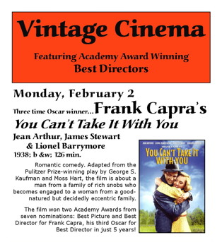

Reason to Rock
Rock Music as Art Form
The Name Above the Title
Etched forever in my memory is one snowy night on South U. in Ann Arbor, when Rich Glatzer and I stood for an hour in the freezing night, unable to stop talking about the film we had just seen.
I should explain that this was before Blu-Ray, before DVD, before digital streaming, before VHS and before cable television. Seeing anything other than a first-run Hollywood film currently in the theaters was extremely difficult. However this was the heyday of student film societies, and thanks to several of these at the University of the Michigan, a devoted student of the cinema could see practically a different film every night.
Rich was such a student, while I was a friend who had gotten to know him through an accident of dorm assignments freshman year, and so I often accompanied him on these trips to various screening rooms around campus. This was the early seventies, and we were generally seeing a steady diet of foreign fare: Truffaut, Antonioni, Fellini, Kurosawa and Bergman (Ingmar, not Ingrid) as well as their lesser peers. And while these movies were exotic fare for students in the American Midwest, some of them at times could also be a bit slow and ponderous.
On this particular night, though, we had set out to see an American film made in 1938 by Frank Capra: You Can’t Take It With You. If either of us had ever seen a Capra film before, it could only have been the perennial Christmas classic, It’s A Wonderful Life, and then only as fairly young children. And, of course, You Can’t Take It With You was anything but slow and ponderous. Afterwards, both of us were ablaze with the film we had just seen, a movie that, in that time and place, seemed to open a door to a world we had never before known existed, a magical world where the ordinary could become extraordinary, a place in which normal citizens, far from the limelight, and lacking any great financial resources, could still live lives full of imagination, creativity, romance, comedy, dignity and distinction.
After that night, neither of us could wait to see more films from the Capra oeuvre. And so Rich – being the serious student of the cinema that he was – proceeded to arrange for a week-long Capra film festival on campus, with the director himself as speaker and guest of honor, while I – as his layabout friend – scored a dinner with the great man and his wife, as well as a signed copy of his autobiography, The Name Above The Title.
Fast forward a few decades, and my wife Pauline and I were out at a local theater in Seattle, just a week or so ago, having purchased tickets to see the latest film co-written and co-directed by Richard himself, along with his romantic partner, Wash Westmoreland. We’d heard nothing but good things about the movie, Still Alice, which had already won Julianne Moore a best actress award at the Golden Globes, and put her in the running for a potential Academy Award.
We sat in the darkened theater with a room full of strangers, and watched the story of Alice Howland, a happily married professor who is stricken with early onset Alzheimer’s disease. We sat and watched with dismay and grief through Moore’s devastating and unflinching portrayal, as Alice gradually loses capabilities once taken for granted, and her family members adjust in various ways to having a wife or mother who, however reduced her circumstances, is after all still theirs.
As I watched the story of Alice, though, I was constantly reminded of the names above the title of this particular film, the names of Richard Glatzer and Wash Westmoreland. For although the words were spoken by the actors on the screen, I could not help but visualize the people who had written these words, and directed these performances. Directed, in Rich’s case, with the help of an iPad, since Rich was himself in the advanced stages of ALS.
This story within the story seemed to jump out at me when listening to the Lyle Lovett song, “If I Had a Boat,” which is featured prominently within the film. At a superficial level, it seems like an appropriate enough background song for the seaside scene in which it appears. For Rich and Wash, though, I couldn’t help but feel that it carried some deeper meaning, especially when hearing the words for a second time, sung behind the closing credits.
If I were Roy Rogers,
I’d sure enough be single.
I couldn’t bring myself to marrying old Dale.
It’d just be me and Trigger.
We’d go riding through them movies,
Then we’d buy a boat and on the sea we’d sail.
For anyone who has known Rich, it should come as no surprise that he and his partner decided to make a film of Still Alice after reading the book, and no surprise that Rich remained actively engaged in the making of the film, even after his disease had advanced to the stage of removing his power of speech. For Rich learned more from Capra than simply the craft of filmmaking – he learned he could walk through that door we found back on a snowy street in Ann Arbor, could inhabit that world depicted by Capra, a world in which the ordinary reveals itself to be extraordinary, and lives lived far from the limelight may nonetheless be ones graced with imagination, creativity, romance, comedy, dignity and distinction.
Once through that door, he never looked back.
February 22, 2015
Next: If I Had a Boat